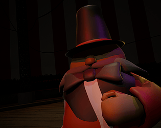
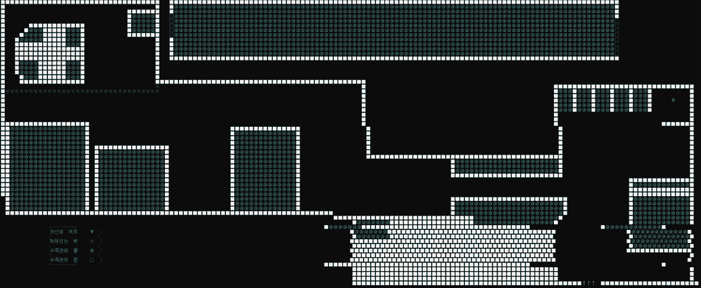

Fall 2025
Bloom
Simulation game, Godot. Best Art award, Video Game Development Association at CSU Long Beach.
Care for a sunflower through day and night. I was the sole programmer, building all of the game's code myself.
A portfolio by
I build interactive worlds people can step inside: VR lessons, games, and AI-driven stories.
2026 to now
Student Assistant and sole programmer, SPICE project, IMMERSYNC Lab, Cal Poly Pomona
Cal Poly Pomona's SPICE project funds new ways of teaching. In Dr. Jamshidi's lab I build VR activities that let computer science students walk around inside the algorithms they study, and I program every interaction myself.
Each phase starts with a literature review of earlier educational VR projects and how they were evaluated. From there I turn rough activity outlines into detailed implementation plans, then build. The apps run on Meta Quest through OpenXR, with a Unity WebGL version so students without a headset can take part.
I planned nine data structures activities and have built seven. Five of them were used in the course.
Try the web version in your browser on Unity Play, no headset needed.
Backtracking, with the recursive call stack growing beside the board.
Recursive search through a letter grid, dead ends and backtracking included.
Add and delete linked list nodes while the matching code writes itself out.
Push and pop a stack to build an expression, then convert infix to postfix.
Two pointers sweep the array while the water area is measured, step by step.
In September 2026, 35 students in CS 2400, Data Structures, worked through the Container With Most Water and Word Search activities and gave written feedback.
Their feedback became my next list of changes: step and pause controls, a reset point for the standing platform, smoother turning, and more hands-on code.
Earlier in 2026
Before the lab moved to data structures, I built a firewall simulation with Dr. Xiao and two cybersecurity students. A cloud, a router and a PC sit in a line. Students set stateless and stateful firewalls on the router or the PC, send safe and malicious packets, read packet headers, and switch between the physical devices and an abstract view that shows the packets and firewalls inside them.
Header fields and source and destination addresses, up close.
The grip button swaps the hardware for its insides.
Set a firewall rule on the router, then watch it in the abstract view.
2019 to 2025
Fall 2025
Simulation game, Godot. Best Art award, Video Game Development Association at CSU Long Beach.
Care for a sunflower through day and night. I was the sole programmer, building all of the game's code myself.
Spring 2025
Interactive fiction game, Godot. Video Game Development Association at CSU Long Beach.
Be a jester and impress the audience to survive. I was the team lead and main programmer.

Aug to Dec 2024
3D horror game, Godot. Best Gameplay award, VGDA Launch Party at CSU Long Beach.
Made over a semester with the Video Game Development Association. I led a five-person team using Jira and Scrum, ran our decision polls and assigned tasks around everyone's coursework, and was lead programmer: character control, mining, drill upgrades, monsters and the day cycle. It was my first project in Godot.
June 2024
UC Berkeley AI Hackathon. Top 20 of 100 teams.
A storytelling AI built on the OpenAI API, narrated with ElevenLabs text to speech. I built the storytelling system and helped teammates get the OpenAI, ElevenLabs and Hume APIs running.
2022
Freelance proof of concept, Unity and Photon.
A demo of a founder's idea for a legal services metaverse. I built a virtual city with buildings and NPCs on Unity's navigation system, Photon multiplayer, and live camera and screen sharing.
2019
International Sustainability Game Jam, HKU, Utrecht.
An environmental puzzle game made with an international team, working in English. As one of two programmers I built the character movement and the furniture placement system the game was built around.
A 2D platformer made at Seoul Digitech High School. I programmed about fourteen monsters, including a wild boar boss, plus the flashlight and parts of the UI, and ran our booth at the G-Star game show.
A platform jumping game from a game jam at my high school. I focused on keeping its leaf generation system fast. Source

A text adventure written in C: about 2,000 lines and a 60 by 150 character map of an aquarium, with many endings. Source
2019 to now
Spring 2026 to now
SPICE project, IMMERSYNC Lab, Cal Poly Pomona
Sole programmer of the VR activities above, for Meta Quest and the web.
Dec 2024 to Jan 2025
NSF Game Maker Awards, Long Beach
Mentored two K-12 students through the competition with Unity tutorials and sample projects I designed.
Fall 2024 to Fall 2025
Video Game Development Association, CSU Long Beach
Made three club games: led the Cryptobiosis and Confectionary teams, and was sole programmer on Bloom. Also served as a general officer, planning workshops and game jams.
Jan to May 2022
Lawverse, South Korea
Built the legal metaverse proof of concept described above.
Sep 2019 to Dec 2022
Wooriline, Goyang, South Korea
Built and maintained cross-platform online multiplayer games on a four-person team. Integrated Facebook, Google and Firebase for sign-in, ads and security, and built the company's first 3D game systems. Also updated Android plugins, shipped releases through Google Play, and reported progress to the company head every week.